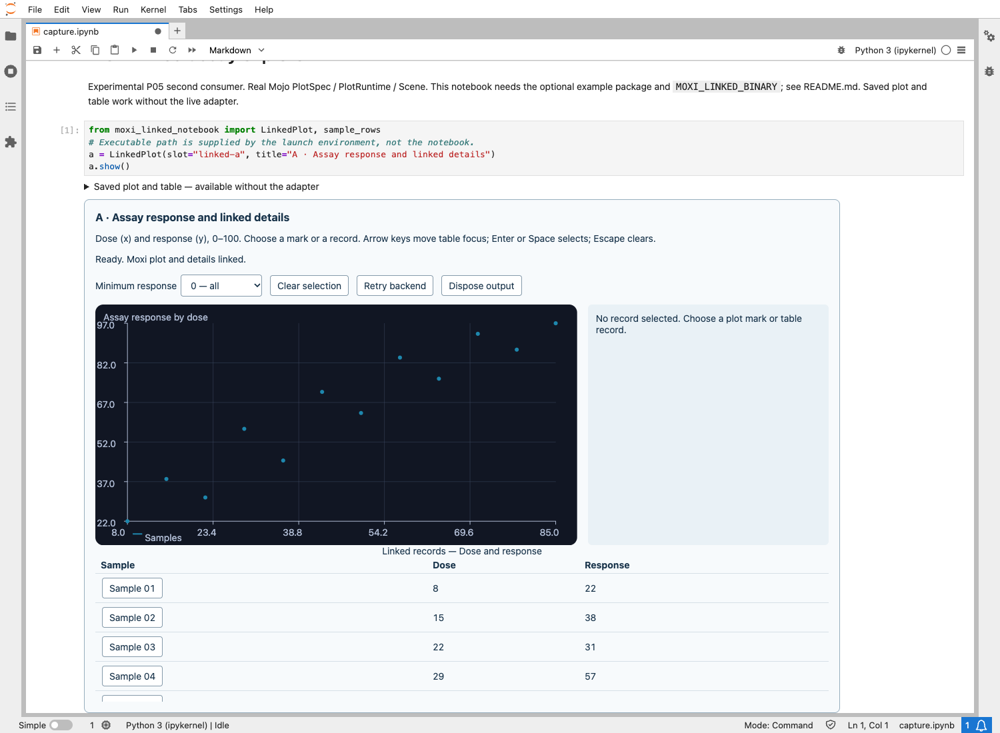
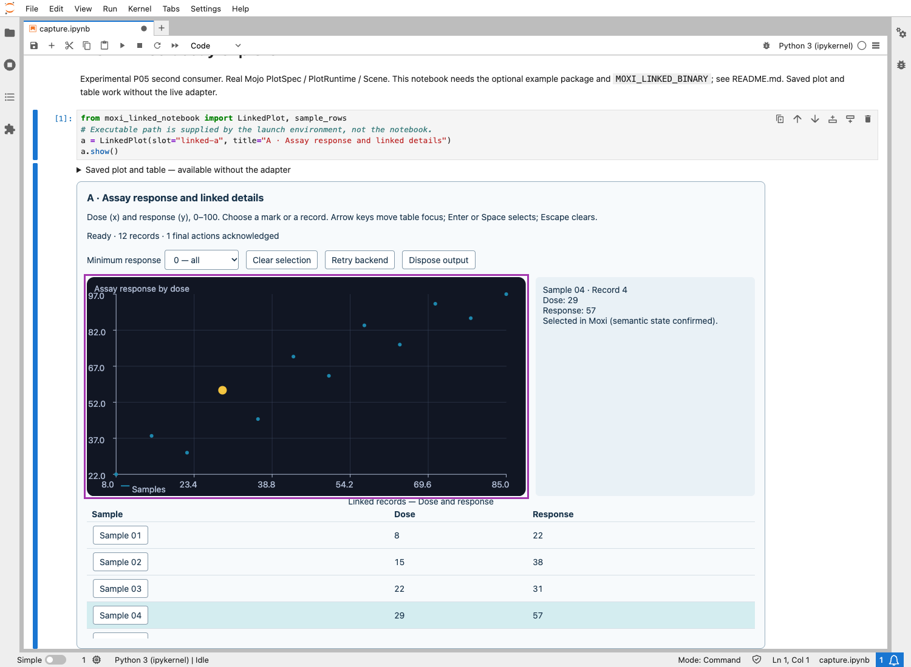
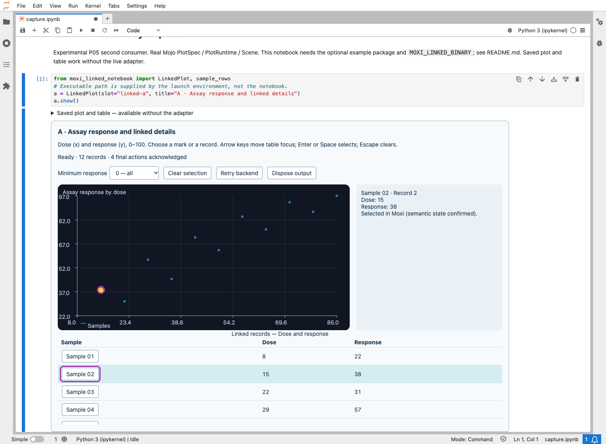
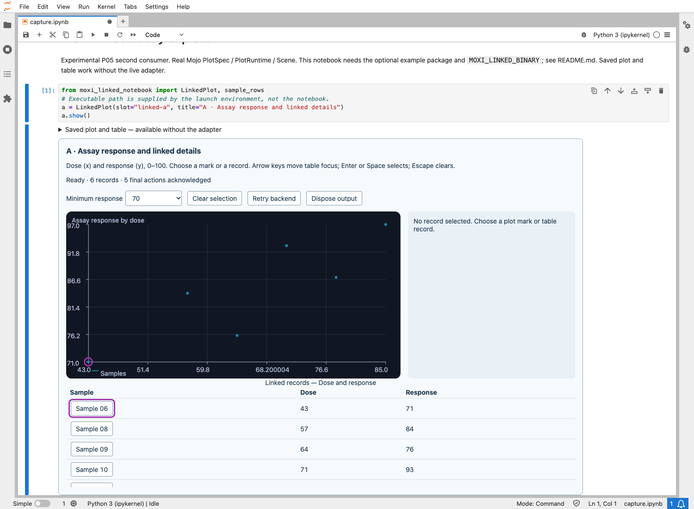
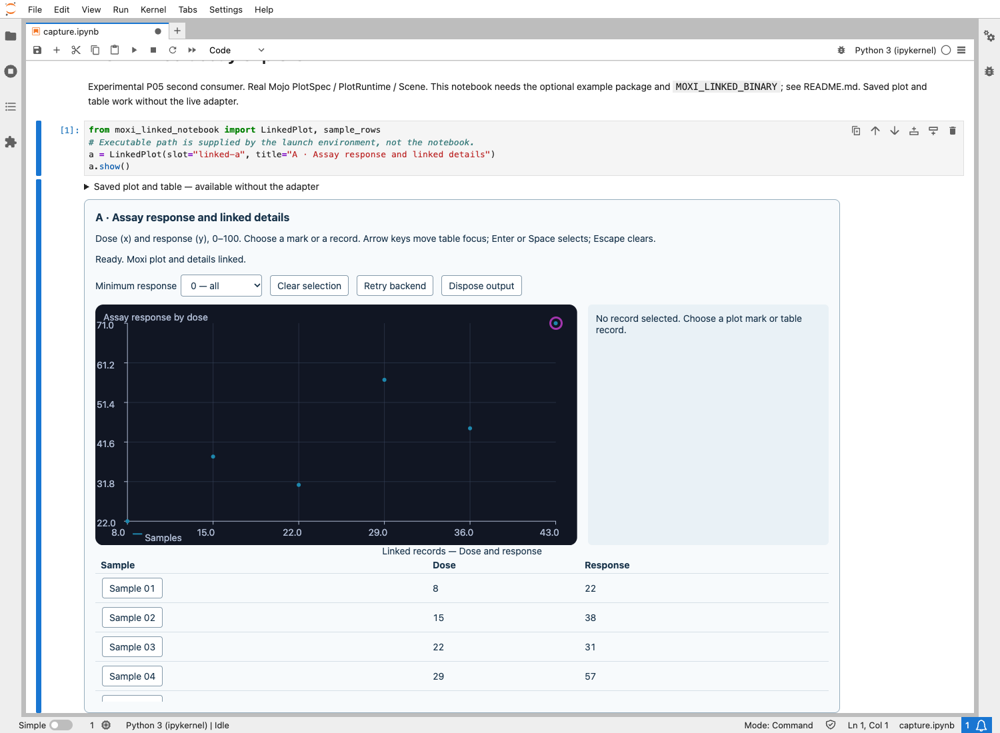
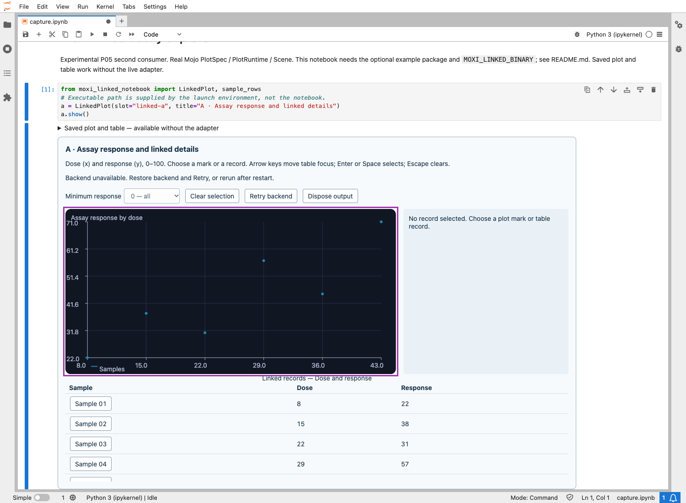
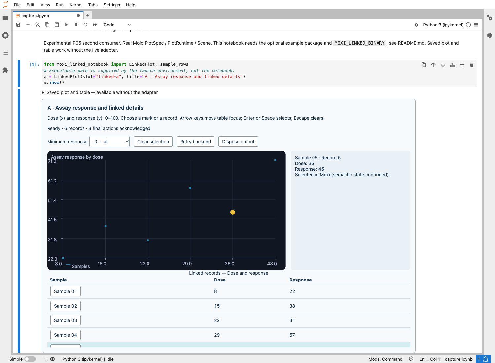
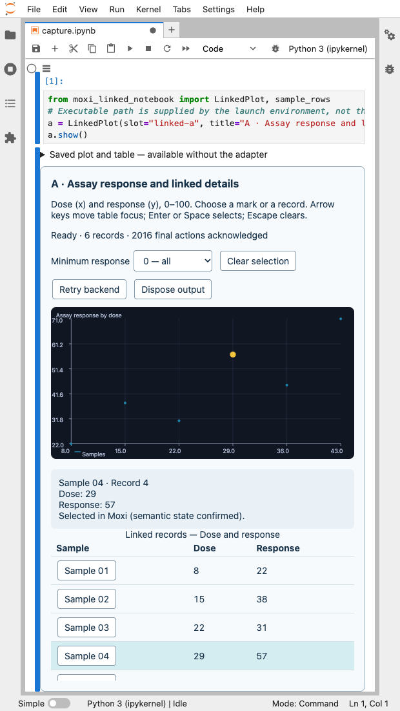
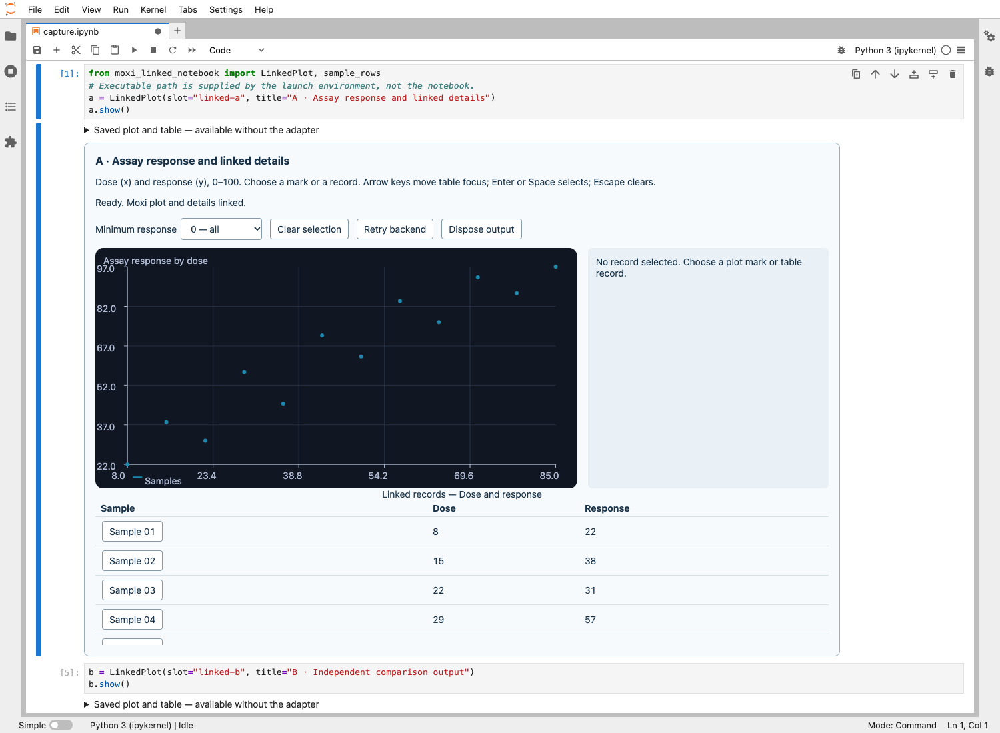
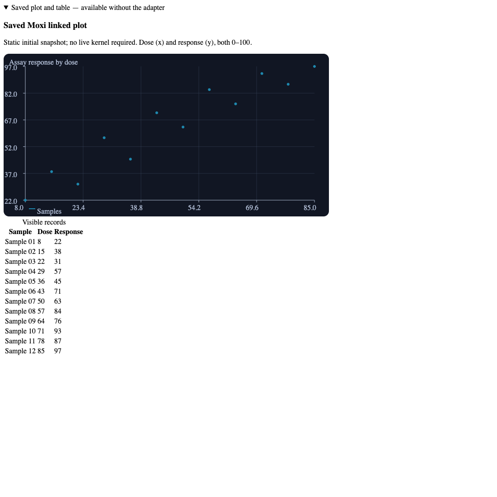

linked-notebook · dc2b6c1a1ca9af6e5ad6f9f93559d8e77bb77f98 · macOS-27.0.1-arm64-arm-64bit-Mach-O · Mojo native Scene/SVG subprocess; installed anywidget; local JupyterLab and Chrome headless · 12 synthetic assay rows; 64-record capacity; two linked outputs and independent FDG

Initial real Mojo scatter plot and linked record table Action: Initial real Mojo scatter plot and linked record table Expected: Actual installed-consumer state passes the corresponding checks in evidence.json; installed Google Chrome, headless Playwright, actual local JupyterLab
initial · browser · 1500 × 1100 pixels

Pointer selection links actual Moxi mark, details and table; B and P04 FDG unchanged Action: Pointer selection links actual Moxi mark, details and table; B and P04 FDG unchanged Expected: Actual installed-consumer state passes the corresponding checks in evidence.json; installed Google Chrome, headless Playwright, actual local JupyterLab
interaction · browser · 1500 × 1100 pixels

Arrow-key focus and Enter selection survive the acknowledged frame Action: Arrow-key focus and Enter selection survive the acknowledged frame Expected: Actual installed-consumer state passes the corresponding checks in evidence.json; installed Google Chrome, headless Playwright, actual local JupyterLab
interaction · browser · 1500 × 1100 pixels

Filter retains stable record keys and clears details for a removed selection Action: Filter retains stable record keys and clears details for a removed selection Expected: Actual installed-consumer state passes the corresponding checks in evidence.json; installed Google Chrome, headless Playwright, actual local JupyterLab
result · browser · 1500 × 1100 pixels

Atomic data replacement resets selection; independent output keeps 12 records Action: Atomic data replacement resets selection; independent output keeps 12 records Expected: Actual installed-consumer state passes the corresponding checks in evidence.json; installed Google Chrome, headless Playwright, actual local JupyterLab
result · browser · 1500 × 1100 pixels

Real Python backend rejection preserves the last frame and exposes recovery Action: Real Python backend rejection preserves the last frame and exposes recovery Expected: Actual installed-consumer state passes the corresponding checks in evidence.json; installed Google Chrome, headless Playwright, actual local JupyterLab
recovery · browser · 1500 × 1100 pixels

Explicit Retry reconnects and selection works again Action: Explicit Retry reconnects and selection works again Expected: Actual installed-consumer state passes the corresponding checks in evidence.json; installed Google Chrome, headless Playwright, actual local JupyterLab
recovery · browser · 1500 × 1100 pixels

620 CSS-pixel viewport at DPR 2; actual pointer hit after resize Action: 620 CSS-pixel viewport at DPR 2; actual pointer hit after resize Expected: Actual installed-consumer state passes the corresponding checks in evidence.json; installed Google Chrome, headless Playwright, actual local JupyterLab
interaction · browser · 620 × 1100 pixels

After actual kernel restart and rerun: new session, live linked consumer Action: After actual kernel restart and rerun: new session, live linked consumer Expected: Actual installed-consumer state passes the corresponding checks in evidence.json; installed Google Chrome, headless Playwright, actual local JupyterLab
recovery · browser · 1500 × 1100 pixels

Actual saved notebook HTML MIME reopened offline with JavaScript disabled; initial SVG and all 12 records Action: Actual saved notebook HTML MIME reopened offline with JavaScript disabled; initial SVG and all 12 records Expected: Actual installed-consumer state passes the corresponding checks in evidence.json; Chrome headless, persisted MIME output, offline/no JavaScript
result · browser · 1100 × 1100 pixels
Contact sheetReproduce
See examples/linked_notebook/README.md. Build wheel and native executable, assemble source-free bundle, install into clean environment, run capture.py with Python -I, then gallery.py. Parent used MOXI_P05_CONSUMER=/tmp/moxi-p05-parent-consumer and MOXI_NOTEBOOK_PORT=8919. Evidence includes emulated DPR2 and labeled synthetic cancellation; physical input, remote hosts and screen readers unverified.
Real Mojo PlotSpec and Scene, source-key selection, linked details, independent outputs, bounded comm and lifecycle recovery
Screenshots show recorded states. They do not establish latency, scientific accuracy, physical IME, screen-reader behavior, or human usability.